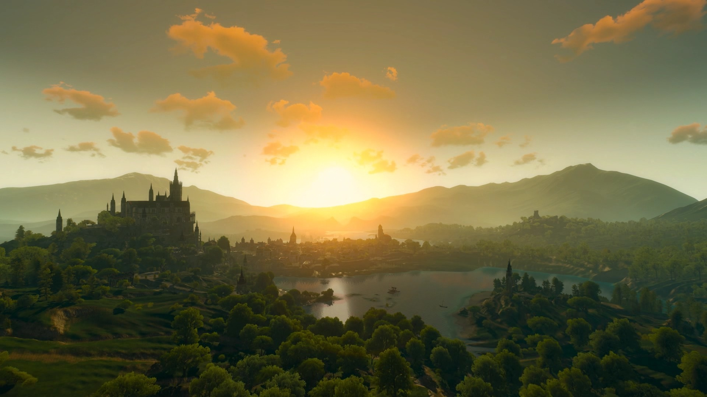
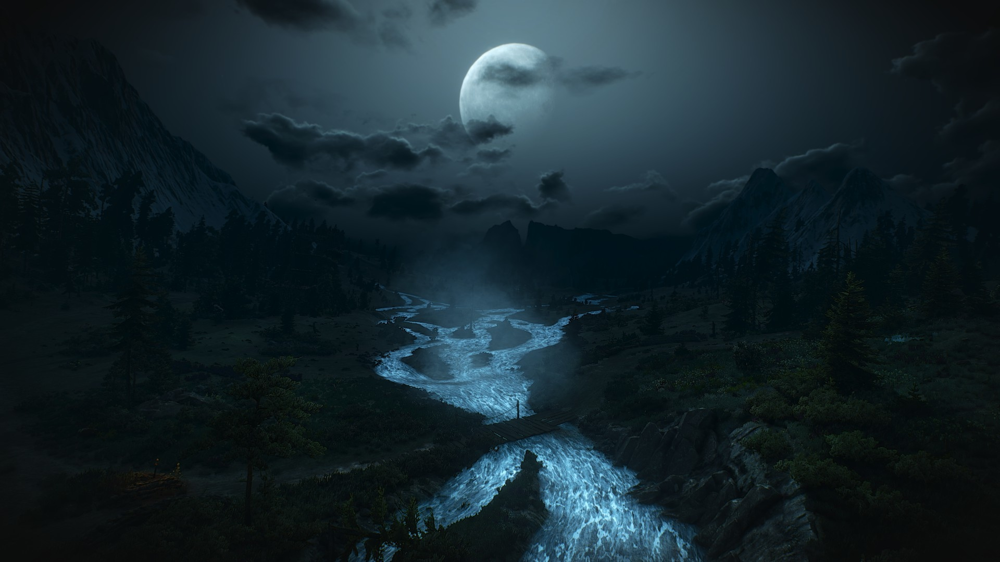
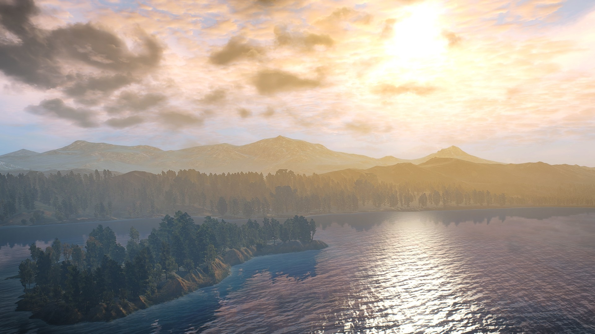
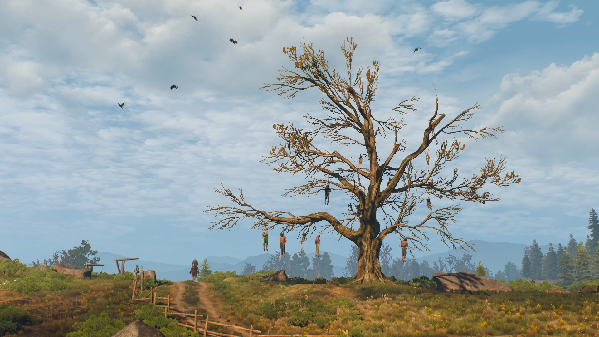

Página Principal
Regiões
Habilidades
Monstros
Equipamentos
Personagens
Geralt de Rívia
Yennefer de Vengerberg
Triss Merigold
Cirilla Fiona
Romance
Cadastro
Buscar
Toussaint

Toussaint é um pequeno ducado que pertence ao Império Nilfgaardiano, famoso por seus vinhos, que são melhores por conta de seu solo vulcânico. O ducado montanhoso é governado por Anna Henrietta durante os eventos da saga de livros e jogos. Toussaint não tem um exército próprio, nem uma força policial. O ducado conta apenas com alguns regimentos de cavaleiros errantes que vigiam as fronteiras e estradas, além da guarda da duquesa. Tradição é algo sagrado em Toussaint, o que quer dizer que feriados, o mais importante sendo o Festival do Vinho são de grande relevância. Interessantemente, o Império Nilfgaardiano não tende a se impor nos negócios de Toussaint e normalmente não ultrapassa suas fronteiras.
Skellige

As Ilhas Skellige, mais conhecidas apenas por Skellige, é um ducado-arquipélago dos Reinos do Norte vassalo de Cintra. As seis ilhas constituintes deste arquipélago situam-se no Mar do Norte, fazendo frente com a costa Cidaris e Verden, ao noroeste de Cintra. Seu nome é derivado do arquipélago de Skellig, na costa da Irlanda. Faroe, uma das ilhas na Skellige de Sapkowski, também tem seu nome derivado de duas ilhas dinamarquesas, as ilhas Faroé ou Feroe.
Teméria

O reino de Teméria é um dos Quatro Reinos, um quarteto dos principais países na metade norte do continente. A monarquia foi fundada no século 8, após o primeiro desembarque. Seu primeiro governante foi rei Dezmod, um monarca lendário. Durante os longos séculos de existência do reino, ele veio a ser um dos países mais importantes localizados entre os rios Yaruga e Buina e ganhou notoriedade como a "Pérola do Norte". Teve um papel principal na guerra contra o Império Nilfgaardiano. Temeria tem com sua capital a cidade Vizima.
Vizima

Vizima, Wyzim, ou Vizíma (em The Witcher 3: Wild Hunt) é a capital do Reino de Temeria, um dos Reinos do Norte, e é onde fica a residência do rei Foltest.
 Página Principal
Página Principal